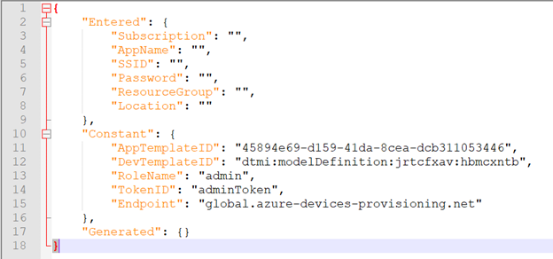
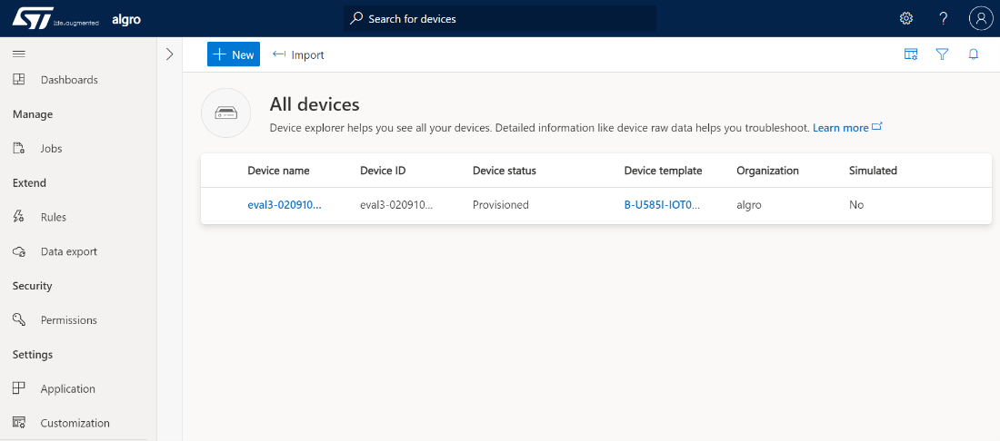
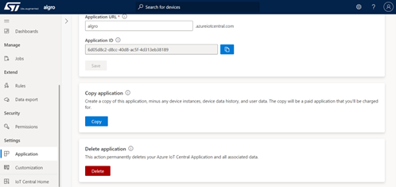
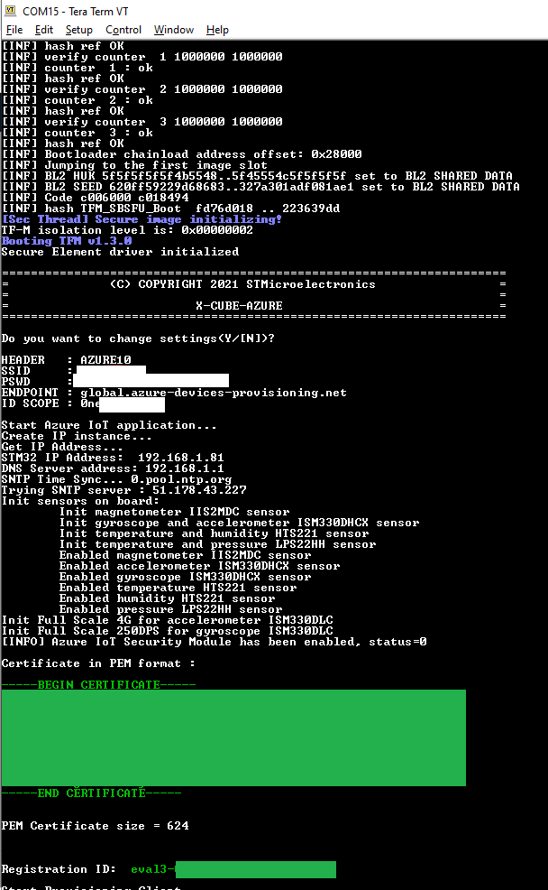

The TFM application components are licensed by ST under Ultimate
Liberty license SLA0044. Read the file q_a.txt for Application Licence
Clarification.
Except as expressly mentioned, other rights are granted with the STSAFE
components, where license SLA0088 is applied.
This application provides an example of Azure RTOS NetX/NetXDuo Azure IoT Plug and Play usage of STM32 B-U585I-IOT02A board with either Cellular or WiFi connectivity and hardware security features.
This reference design integrates the following:
RTOS, Network, ThreadX, NetXDuo, WIFI, MQTT, DNS, TLS, MXCHIP, UART, STSAFE, STSAFE-A110, TFM, TF-M 1.3, SBSFU, Azure-RTOS, IoT Central
This example runs on B-U585I-IOT02A board with either WiFi or cellular modem.
By default the WiFi connectivity is enabled with on-board WiFi module (MXCHIP:EMW3080) used with this configuration :
The EMW3080B MXCHIP Wi-Fi module firmware must be version 2.1.11. If update is needed, a package is available at https://www.st.com/en/development-tools/x-wifi-emw3080b.html. To update, follow the instructions given at the above link, using the EMW3080updateV2.1.11RevC.bin flasher under V2.1.11/SPI folder.
In case of Cellular connectivity, the supported cellular modem is the Quectel BG96 on ST MB1329 extension board. It connects to STMOD+2 connector CN2 on B-U585I-IOT02A board.
This application has been tested with B-U585I-IOT02A (MB1551-U585AI) board Revision: RevC and can be adapted to other supported device and development board.
This application uses USART1 to display logs. The serial terminal (Tera-Term for example) configuration is as follows:
To build this application (not needed when Quick Connect is used):
C:\ drive or to use a virtual drive with subst
command. Indeed IAR project with a long file path may not build
correctly.To flash this application:
If Wi-Fi connectivity is chosen, a 2.4 GHz Wi-Fi router connected to the Internet with DHCP enabled and the router’s SSID and password is also required for the STM32 B-U585I-IOT02A development board to connect to the cloud.
If Cellular modem is chosen, a SIM card with suitable data plan must be inserted in SIM slot on cellular modem board.
By default, the application is delivered with pre-compiled binaries compatible with WiFi connectivity. If Cellular connectivity is desired, the full application must be recompiled with the dedicated configuration in Non Secure application project. See Advanced users section for more details.
Please refer to one of the azure cloud connection methods :
For device developers, the suggested next step is to look at the
other tutorials in the series Getting started
with Azure RTOS.
This application is provided with pre-configured projects for EWARM
and STM32CubeIDE.
Depending on your development environment, please refer to one of the
documentation below:
For a better experience with Azure IoT Central Application, you can use the following device template:
Projects\B-U585I-IOT02A\Applications\TFM_Azure_IoT\TFM_Appli\NonSecure\Config\AzureIotCentral\dtmi_stmicroelectronics_b_u585i_iot02a_standard_fw;3.json
Please refer to Azure IoT Central Application device template documentation for more information.
If you are experiencing build issues in IAR, ensure that the project
is extracted directly at root of your C:\ drive. If this is
not possible you can use the subst
command to create a virtual drive.
The state of Config.json determines how the script executes. If you have already run the STM32U5_AZ_IotCentral_QC.py script once, Config.json will be permanently modified. If you want to add another device to your central application on a second integration of the script, no changes need to be made to Config.json. If you would like to create another application, you will have to set Config.json to the default configuration as pictured below.

To do so navigate to the drop menu on the left and select ‘Application’

Under the Management tab, scroll down to and select ‘Delete’.

The X.509 certificate and Registration ID (Common Name) are printed on the terminal after each start.

Online support requests can be submitted at https://my.st.com/ols.